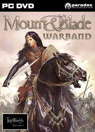

Mount and Blade: Warband
"Mount and Blade: Warband" es un juego de estrategia y aventura ambientado en un mundo medieval. Conquista castillos, lidera ejércitos y sumérgete en una experiencia única de simulación de guerra.
Enfréntate a desafiantes batallas, recluta seguidores y decide tu propio destino en este juego épico. Explora un vasto mundo abierto y forja tu camino hacia la gloria.
Características destacadas:
- Combate táctico en tiempo real.
- Gestión de tropas y recursos.
- Exploración de un mundo medieval expansivo.
Mas sobre warband
"Mount and Blade: Warband" ofrece una experiencia única de juego, combinando elementos de estrategia, simulación y aventura en un mundo medieval detallado. Vive la emoción de comandar tu propio ejército, conquistar tierras y participar en batallas épicas. La libertad de elección y las consecuencias de tus acciones dan forma a tu historia en este emocionante viaje.
Explora los rincones del mundo, forja alianzas y enfréntate a desafiantes enemigos. ¿Te convertirás en un respetado señor feudal o en un temido bandido? La elección es tuya. Prepárate para sumergirte en un juego que te llevará a la época medieval de una manera que nunca antes habías experimentado.
Gameplay

 Descargar aquí
Descargar aquí
 Descargar aquí
Descargar aquí